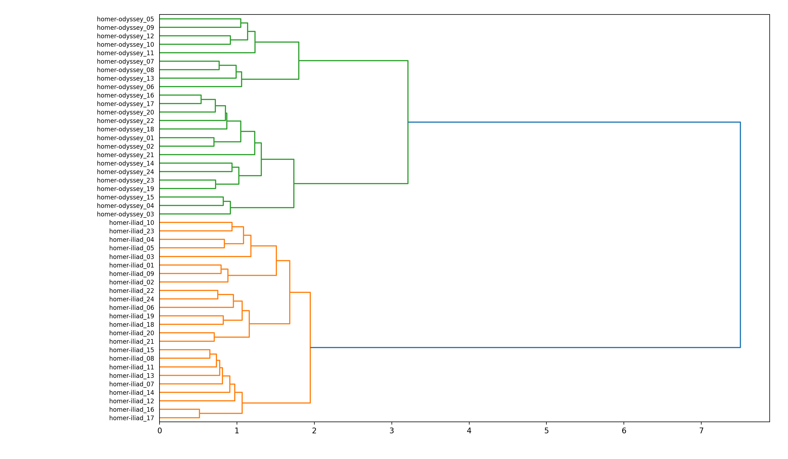
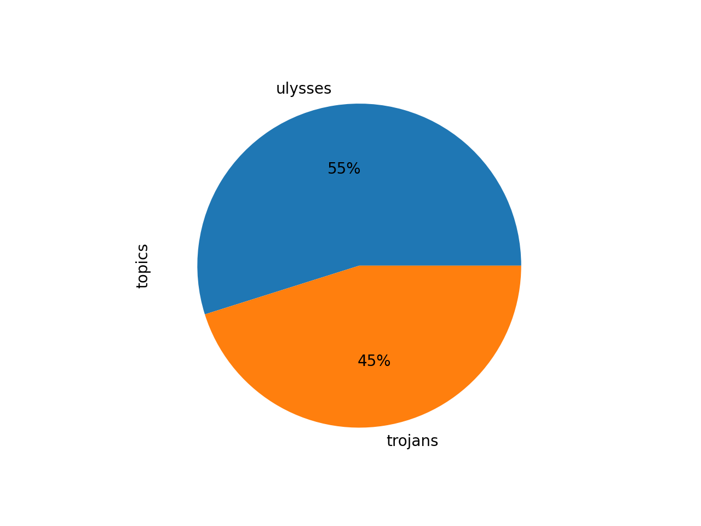
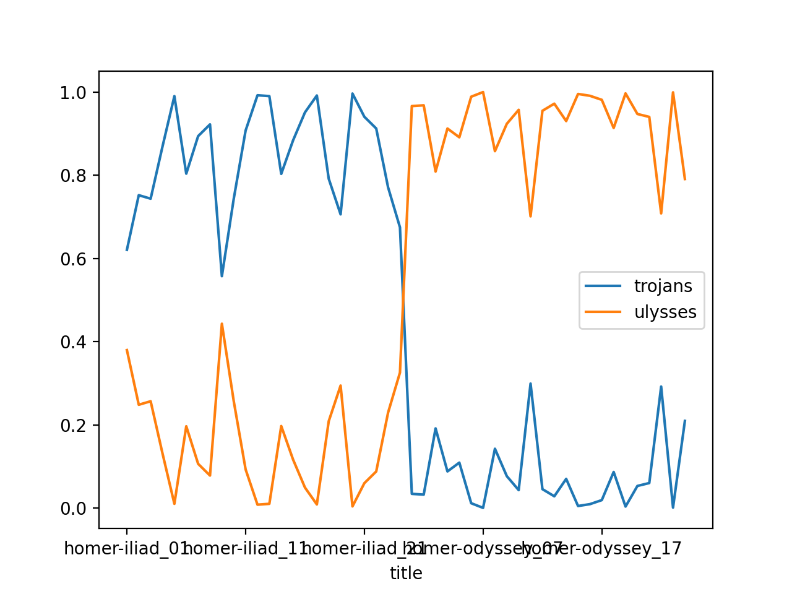

Use case: Topic modeling¶
In this section I will outline a method for applying topic modeling against Homer’s Iliad and Odyssey. I have found this method works very well for just about any study carrel.
Topic modeling is an unsupervised machine learning process. It is used to enumerate latent themes in a corpus, and it is a very good way to describe what a corpus is about. But the student, researcher, or scholar must keep in mind that there is no one correct answer to questions regarding aboutness. For example, answer me this, “How many things are Shakespeare’s writings about, and what are they?” That said, topic modeling is a useful exercise because it can be used to illustrate the ebb & flow of ideas over time or how different authors’ writings compare & contrast.
To begin, download the homer study carrel:
rdr download homer
Use the info command to get an idea of the carrel’s extent. Notice how the carrel is about 270,000 words long. The bigger the carrel, the more time must be spent computing topic models:
rdr info homer
Next, cluster the corpus to get an idea of how many large-scale themes may exist in the corpus. The result of this process informs the topic modeling process:
rdr cluster homer
Notice how the corpus falls into two gross themes, but we don’t know what those themes may be:
Ask yourself, “If I were to describe Homer’s works in a single word, then what would that word be?” To answer the question, model Homer using a single topic and a single word:
rdr tm homer -t 1 -w 1
Apparently Homer’s works are about “will”:
labels weights features
will 5.8306 will
Now ask yourself, “How can that single topic be elaborated upon?” To answer the question, model Homer with a single topic and four words:
rdr tm homer -t 1 -w 4
Apparently Homer has something to do with the topic will-son-one-man, and the topic can be labeled with the word “will”:
labels weights features
will 5.8306 will son one man
“Okay,” you say do yourself, “But if I were divide Homer into two topics and each where elaborated upon with four words, then what might those topics be?” Try this:
rdr tm homer -t 2 -w 4
The answer to your question is “will”, and “son”, but just as importantly, take note of the words used to elaborate on these topics:
labels weights features
will 0.52631 will ulysses one house
son 0.42646 son will trojans achaeans
Now is a good time to visualize this result. Given the whole corpus has been divided into two themes, and each theme has a weight, then what proportion of the whole is assigned to each theme? Pie charts are an easy way to visualize these relationships. To create a pie chart from the model, give this a go:
rdr tm homer -p read -o chart
We can literally see that about half of Homer is about “will” and half of Homer is about “son”. And notice also how the pie chart’s ratios are very similar to the ratios output by the cluster process:
Since the underlying files in this study carrel are named sequentially, it is possible to enhance the underlying topic model with file names, pivot the model, and illustrate how our two themes ebb and flow of the course of the Homer’s stories:
rdr tm homer -p read -o chart -y line -f title
From the results we can see that the two themes are distinctive between the two underlying works. One broadly describes the Trojan War, and the other broadly describes Ulysses return home:
Modeling Homer with a larger number of topics elaborates on what we have already seen, but since we are requesting a greater number of facets, it behooves us to significantly increase the number of times the underlying calculations are performed:
rdr tm homer -t 8 -w 8 -i 9600
rdr tm homer -p read -o chart
rdr tm homer -p read -o chart -y line -f title
Given there are forty-eight books in the whole of Homer, it might behoove the student, researcher, or scholar to model the corpus with forty-eight topics, many words, denote an obscene number of iterations, and visualize the result:
rdr tm homer -t 48 -w 12 -i 12800
rdr tm homer -p read -o chart
rdr tm homer -p read -o chart -y line -f title
Notice how the topic of “will” dominates, again, and then ask yourself, “Why?”
Topic modeling, like all modeling processes, is iterative in nature. Like all modeling proceses, start out small, visualize often, and grow your model. The problem to solve is not so much articulating truth. Instead, it is about making observations and telling a compelling story.